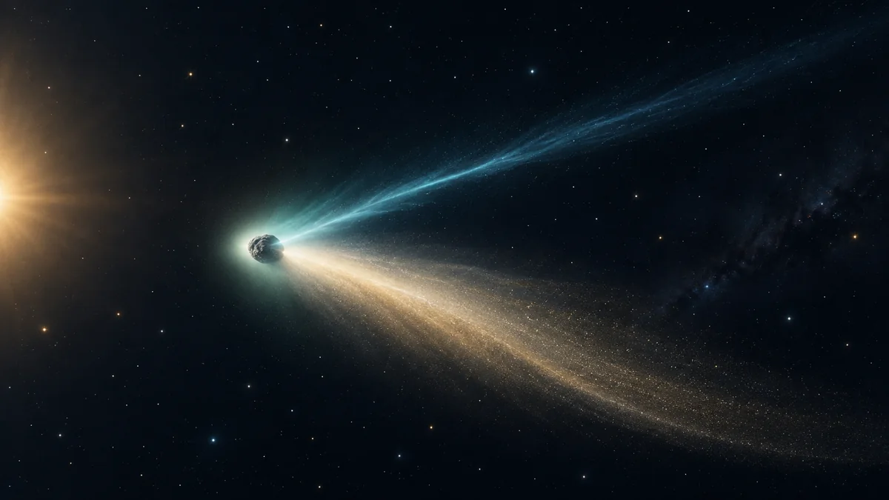

혜성의 꼬리는 왜 날아가는 뒤쪽만 향하지 않을까요?
혜성의 꼬리를 만드는 햇빛과 태양풍을 구분하고, 곧은 이온 꼬리와 휘어진 먼지 꼬리에서 서로 다른 단서를 읽어봅니다.

먼저 꼬리의 기준을 바꿔보세요
달리는 자동차 뒤로 먼지가 날리듯, 혜성의 꼬리도 늘 진행 방향의 뒤에 붙을까요? 혜성 사진을 읽을 때는 혜성의 움직임뿐 아니라 태양이 어느 쪽에 있는지부터 생각해야 합니다. 꼬리의 재료를 밀어내는 데 햇빛과 태양풍이 작용하기 때문이에요.
그래서 꼬리는 혜성의 지나온 길을 그대로 그린 선이 아닙니다. 특히 가늘고 곧은 이온 꼬리는 대체로 태양 반대쪽을 향합니다. 꼬리 끝을 보고 혜성이 어느 방향으로 날아가는지 바로 단정할 수 없는 이유입니다.[2]
얼어 있던 핵에서 재료가 나와요
혜성의 중심에는 얼음과 먼지 등을 포함한 핵이 있습니다. 태양 가까이에서 가열되면 얼음이 기체로 변하고 먼지도 방출되어, 핵 주위를 흐릿하게 감싼 코마가 발달해요. 이 기체와 먼지가 꼬리의 재료가 됩니다.
핵과 그 주변의 코마를 구분하면 사진의 흐릿한 머리를 이해하기 쉬워요. 단단한 중심에서 나온 물질이 주변으로 퍼진 것이므로, 넓게 보이는 머리 전체가 하나의 거대한 고체 덩어리라는 뜻은 아닙니다. 그 주변 물질 일부가 더 길게 뻗어 꼬리를 이룹니다.[1]
이온 꼬리는 태양풍에 반응해요
이온은 전자를 잃거나 얻어 전하를 띤 입자입니다. 혜성에서 나온 기체의 일부가 이온이 되면 태양풍과 상호작용합니다. 태양풍은 태양에서 바깥으로 흐르는 입자들의 흐름으로, 지구의 공기가 부는 바람과는 달라요.
이 영향을 받는 이온 꼬리는 보통 가늘고 비교적 곧게 뻗으며 태양 반대 방향을 가리킵니다. 이를 종이에 그린다면 태양과 혜성을 잇는 선을 먼저 놓고, 혜성에서 태양을 등지는 쪽으로 꼬리를 이어보면 기본 방향을 이해하기 쉽습니다.[3]
먼지 꼬리는 왜 휘어질까요?
먼지에는 햇빛이 주는 압력도 작용합니다. 하지만 먼지 알갱이는 이온과 똑같이 반응하지 않고, 풀려나온 뒤의 운동에도 혜성 궤도의 흔적이 남습니다. 그래서 먼지 꼬리는 더 넓게 퍼지며 휘어진 모양을 보일 수 있어요.
NASA의 우주비행 기초 자료는 재료의 크기와 질량에 따라 가속되는 정도가 다르고, 먼지 꼬리는 천천히 밀려나 곡선을 이루기 쉽다고 설명합니다. 두 꼬리가 완전히 같은 선 위에 놓이지 않아도 이상한 현상이 아닙니다. 오히려 서로 다른 재료와 힘을 보여주는 단서예요.[2] [3]
사진 속 두 방향을 찾아보세요
혜성 사진을 볼 때는 넓고 굽은 부분과 가늘고 곧은 부분이 함께 나타나는지 살펴보세요. 두 꼬리를 구분할 수 있다면, 그 모양만 외우기보다 어떤 재료가 어떤 영향을 받았는지 연결해보면 좋습니다. 실제 사진에서 두 부분이 늘 또렷하게 구분되는 것은 아니에요.
직접 관측을 준비한다면 ORBIT의 ‘관측 가이드’에서 장소와 하늘 조건을 먼저 점검해보세요. 이 글은 특정 혜성이 오늘 보인다는 예보가 아닙니다. 관측 대상의 최신 위치와 밝기는 별도로 확인하고, 사진에서는 진행 방향과 태양 반대 방향을 구분하는 연습부터 해보세요.[1]
이 이야기를 확인한 자료
- NASA Science · Comet Facts ↗자료 확인 2026.09.27 · 원문 새 탭
- NASA Science · Basics of Space Flight: Chapter 1, The Solar System ↗자료 확인 2026.09.27 · 원문 새 탭
- NASA Science · Helio and You: Comets, the Sun, and You ↗자료 확인 2026.09.27 · 원문 새 탭
자료의 날짜와 적용 범위를 함께 확인해주세요. 오류 제보하기 →